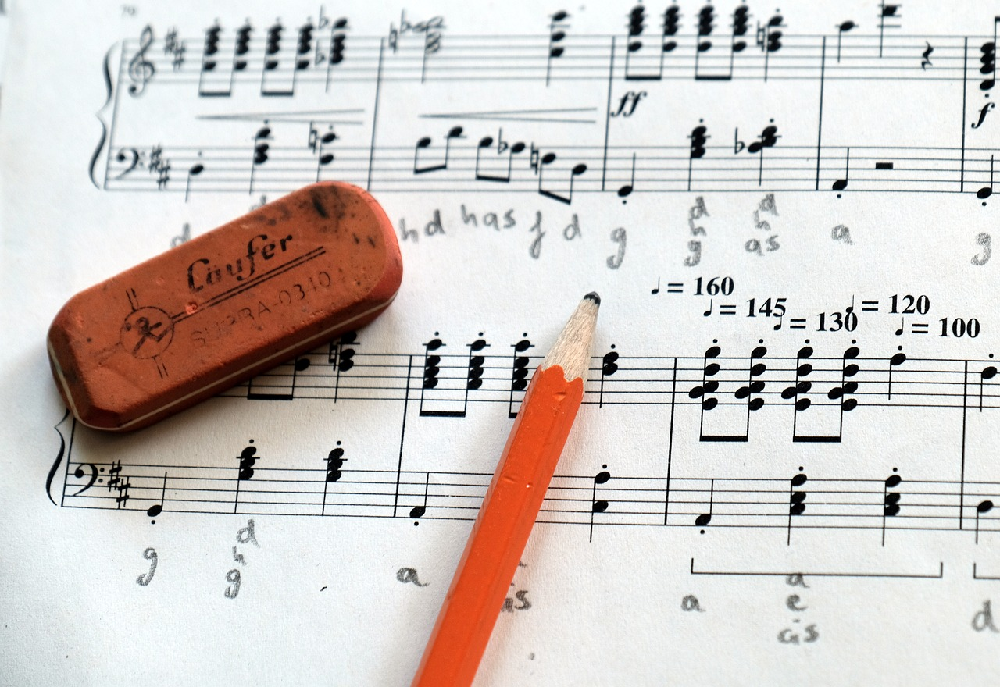

<!DOCTYPE html>
<html>
    <head>
        <title>Eveie_assignment_02</title>
        <meta charset="UTF-8">
        <link rel="stylesheet" href="css/style.css">
        <link rel="preconnect" href="https://fonts.googleapis.com">
<link rel="preconnect" href="https://fonts.gstatic.com" crossorigin>
<link href="https://fonts.googleapis.com/css2?family=Carrois+Gothic&family=IBM+Plex+Mono:ital,wght@0,400;0,600;0,700;1,100;1,200;1,300;1,400;1,500;1,600;1,700&family=Tangerine:wght@400;700&display=swap" rel="stylesheet">

    </html><link rel="preconnect" href="https://fonts.googleapis.com">
    <link rel="preconnect" href="https://fonts.gstatic.com" crossorigin>
    <link href="https://fonts.googleapis.com/css2?family=Carrois+Gothic&family=IBM+Plex+Mono:ital,wght@0,400;0,600;0,700;1,100;1,200;1,300;1,400;1,500;1,600;1,700&family=IBM+Plex+Sans+Condensed:ital,wght@0,100;0,200;0,300;0,400;0,500;0,600;0,700;1,100;1,200;1,300;1,400;1,500;1,600;1,700&family=Tangerine:wght@400;700&display=swap" rel="stylesheet">
    </head>
    
    <body>
        <header>
            <h1 class="border">Behind The Scenes of Concert Band</h1>
    <div class="navbar">
        <nav>
             
            <a href="index.html">Home</a>
            <a href="layout&seating.html">Layout/Seating</a>
            <a href="treble&bassclef.html">Treble Vs. Bass</a>
            <a href="instruments.html">Instruments</a>              
        </nav>
    </div>
    
    </header>
        <section>
            <div>
                <h2 class="border2">Welcome To Concert Band</h2>
                <p>Have you ever wondered how a concert band is built, what lies behind the scenes? it's a lot more complex then one would think there are many different components all of which are very important.</p>
            <div> 
                 
            </div>
            <p>This website is about concert band directed more towards concert band within highschool and middle school.</p>
            </div>
        </section>
        <section>
            <h2 class="border2">Into to Seating/Layout</h2>
            <div>
                <p>Seating in a concert band is highly important but for a breif summary is controls the sound that a band will produce if done incorrectly then it won't sound correct.</p>
               <div> 
                 
            </div>
            </div>
        </section>
        <section>
            <h2 class="border2">What Is A Bass Vs. Treble Clef</h2>
            <div>
                <p>A breif look into this will provide who the harmony, bass, and melody are within a concert band as well as what the difference is.</p>
                <div>
                     
                    </div>
            </div>
            
        </section>
        <section>
            <h2 class="border2">Intruments</h2>
            <div>
                <p>What are the different instruments in a band well there's Four main catagories Woodwind, Brass, string and Percussion each of these play a significant role in a concert band.</p>
                <div>
                    
                </div>
            </div>
        </section>
        <section>
            <p>sources images are all from pixabay minus the treble and bass clef I drew those myself</p>
            <a href="https://pixabay.com/">Pixabay</a>
            <a href="https://youtu.be/VkTfLgCP0JQ?si=zE7wOXuUUOwrcrS0">Bass clef vid</a>
            <a href="https://youtu.be/ENbsD7J-WhA?si=Eg9nWuG_lToIg4oK">Treble Clef Vid</a>
            <a href="https://hub.yamaha.com/winds/wood/the-woodwind-family-explained/">More About Wood Winds.</a>
        <footer>

        </footer>
    </body>
</html>